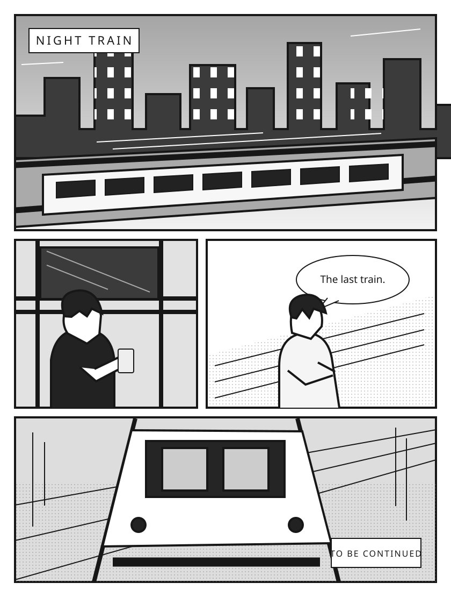

←
FILES SIDEBAR / COMPACT LIST
01
精簡清單
建議先實作
01
精簡清單
02
階層導覽
03
閱讀優先
保留熟悉的檔案清單，先修正對齊、路徑與操作回饋。
M
夜行列車 第 03 卷.cbz — MangaMeeya Rust
示範資料
─ □ ×
檔案
檢視
縮放
移動
書籤
工具
說明
內容導覽
單頁
雙頁
連續
適合視窗
▾
右 → 左
閱讀畫面保留
夜行列車 · 第 03 卷
原創示意內容

第 18 頁 / 48 頁
瀏覽資料夾不會切換這個畫面